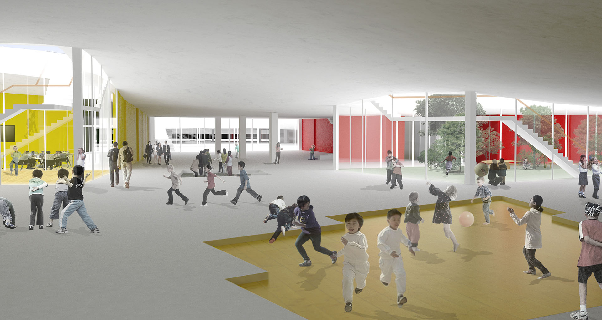

The quailities of school in an apartment complex can be defined thorugh the surface, providing the flexibility for sharing shcool spaces with students and neighbors and student's high-level accesibility to outside from their classrooms. The surfaces, despite simple-looking, is the main idea on identification and differentiation of the prototype. The rectangle surface has four-differentiated edges and virtexes. The lowest side is relevant to the central park of a complex, and opposite side is the highest suggesting a huge space, gym, which can be highly shared with neighbors. Application of the prototype requires sensitive digital technology to create the proper surface, considering the gradient for users and responding the distribution of compositive programs.
Needs for various scale space in apartment complex. In Seoul, there are many of apartment complexes, which is main type of residential architecture in Korea. Although the complexes have enough facilities to support individuals' lives of the residentials, in urban scale, they are lacking of the large scale space for consisting and supporting lcoal community activities, like election and religious activitites which need many people getting together over the individual activities. Most huge apartment complexes have elementary school, because the coverage of the school is almost similar with the boundary of the complex. Thus, in urban scale, school can play proper role to surve the community' place with sharing the part of the scool spaces. Main users of schools, students and teachers, are occupied the building from 9 am to 5 am in week days. However, except for the time, the building is almost empty and not used. In this time, it is possible to open the school facilities to neighbors. To share the building, new prototype of the elementary school in an apartment complex is needed, which is differed from ordinary schools.
For schools in apartment complex. No Fence, but buiding. it hinders residents and students to share facilities in the school. Partially opening space of the school, other approach methods of defining border is required to have sharing space. High-level Accessibility to Ground. ordinary school is consist of staked class rooms, detering students to go out. Horizontal, spreaded and divided organization of class rooms are need to increase most students' accessibility to ground. Various-sized Outside Spaces. ordinary school has one huge outside space called playard. Atypicall way of organizing the school building, such as making various sized outside spaces is required for holding variuos activities of students.

Surface. Lower level area of the surface is used for large-scale activities. With gradient, the surface make two spaces under and on itself. Space on the surface is used for only students. Space under it can be shared with neighbors. Adjusting gradient can make different areas by outside programs. The surface gradient is the key of prototype to differentiate its application by sites' different conditions. Waffle structure is used for making the designed surface. Columns and bearing walls are used to support the surface.
Surface. Lower level area of the surface is used for large-scale activities. With gradient, the surface make two spaces under and on itself. Space on the surface is used for only students. Space under it can be shared with neighbors. Adjusting gradient can make different areas by outside programs. The surface gradient is the key of prototype to differentiate its application by sites' different conditions. Waffle structure is used for making the designed surface. Columns and bearing walls are used to support the surface.